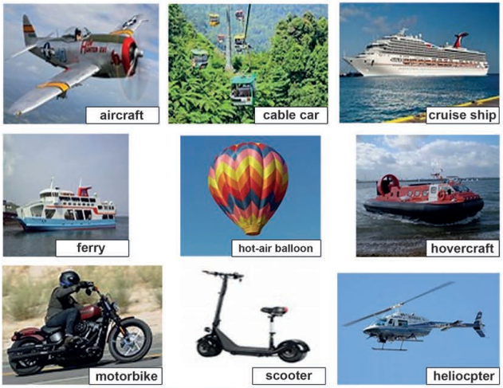
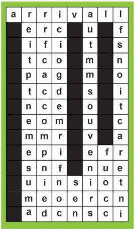
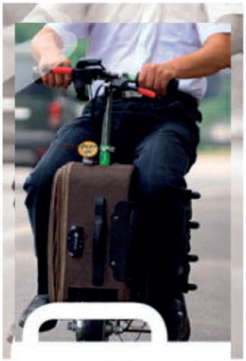

Student’s Book · Let’s Discover
Printed pages 20–25 · images 1–6 only. Speaking, reading, vocabulary, present perfect, reported speech, listening and email sequencing. Your responses stay in this browser; use each activity’s reset to clear it.
Page 20 · Unit opener and Speaking
Module 2 · Unit 3 · Let’s Discover
Unit plan
- Speaking: ask and answer some questions about some forms of transport
- Reading: a text about a journey
- Vocabulary: related to journeys
- Grammar: reported speech & revision of present perfect tense
- Listening: Hie Liang talking about his innovation
- Writing: completing an email
Speaking
Look at the forms of transport then ask your partner:

aircraft · cable car · cruise ship · ferry · hot-air balloon · hovercraft · motorbike · scooter · helicopter
Question 1 has a countable answer. Questions 2–5 are personal speaking practice, not scored. The printed transport opinions are examples, not verified safety claims.
Page 21 · Reading: My Amazing Journey
Read the following text then do the tasks below.
My Amazing Journey
People need to interact and communicate with others. Travel is a means of amusement and enjoyment that allows interaction among people.
I would like to share with you a journey to Spain accompanied by my family.
The tourist company had done an amazing job. It organized the trip and confirmed the dates and places that we were going to visit in Spain. Our flight tickets showed that we needed two hours to reach our destination, which is about 800 kilometers.
Upon arrival, a bus was waiting to drive us to the hotel. We enjoyed the beautiful views and lots of amazing things on our way to the hotel. We passed through a mountainous area with many high volcanic mountains. After checking in our rooms, we headed to a small restaurant which served delicious traditional food.The view from the restaurant was great.
During the three-day trip,we visited various ancient sites and old markets and we bought nice souvenirs for our friends.
Besides, we met people from different nationalities and we learnt about various traditions and cultures. That amazing trip has increased our knowledge about the world.
At the end of the trip, we thanked the trip supervisor and the tourism company for their great efforts.
Key words
| Word / phrase | Meaning printed in the book |
|---|---|
| amusement | fun/pleasure |
| interaction | the act of communicating with somebody |
| accompanied | to travel or go somewhere with somebody |
| to confirm | to show that something is true or correct |
| arrival | an act of coming or being brought to a place |
| souvenir | a thing that you buy to remind yourself of a place |
Page 22 · Reading A: Answer the questions
A- Answer the following questions.
Write your answers, then compare with the passage-based guidance. These open responses are for teacher/self review, not exact-string scoring. Question 2 asks about contact that the passage does not explicitly describe.
Page 22 · Reading B: Choose the answer
B- Choose the correct answer a, b, or c.
Page 22 · Vocabulary: Find and complete
- Find the bold words in the text.
- Complete the sentences with the words you’ve found.

Letter-by-letter word-search transcription
The symbol ■ is a black square. Rows read left to right, exactly as printed.
| a | r | r | i | v | a | l | l |
| ■ | e | r | c | ■ | u | ■ | f |
| ■ | i | f | i | ■ | t | ■ | s |
| ■ | t | c | o | ■ | m | ■ | n |
| ■ | p | a | g | ■ | m | ■ | o |
| ■ | t | c | d | ■ | s | ■ | i |
| ■ | n | c | e | ■ | o | ■ | t |
| ■ | e | o | m | ■ | u | ■ | c |
| ■ | m | m | r | ■ | v | ■ | a |
| ■ | e | p | i | ■ | e | f | r |
| ■ | s | n | f | ■ | n | u | e |
| ■ | u | i | n | s | i | o | t |
| ■ | m | e | o | e | r | c | n |
| ■ | a | d | c | n | s | c | i |
Source issue: the downward letters in column 3 read “accompnied”, not “accompanied”; column 4 upwards reads “cosfirmed”, not “confirmed”. The original grid is unchanged. Use the correctly printed words in the reading for sentences 2 and 5; do not invent replacement letters.
Page 23 · Grammar: Present perfect survey
Revision of Present Perfect Tense: Find Somebody Who...............
- Ask your classmates questions using the present perfect tense and complete the table.
Personal classroom survey, not scored. The printed list omits “has” in items 4–7; that wording is retained. In your own completed statements, use has + past participle. The response-column heading and numbered input labels are on-screen aids; the book leaves that header and those rows blank.
Page 23 · Grammar: Reported speech
Reported Speech
It’s a bad phone line and we could only hear a few sentences of Jerry’s phone call.
“I’m sitting in a train station in New Delhi but I don’t have a lot of time. I don’t have a laptop here so I can’t check my email every day. I’ll call you when I find a room with Wi-Fi. I’ve tried so many new kinds of food here in India. I’ve eaten spicy food and it is delicious. I’m going to travel to Egypt next week to see the Pyramids. I miss you!”
Reporting what Jerry said.
Jerry said that he was sitting in a train station in New Delhi but he didn’t have a lot of time. He told his friend that he didn’t have a laptop there so he couldn’t check his email every day. He would call his friend when he found a room with Wi-Fi. He said that he had tried so many new kinds of food there in India. He had eaten spicy food and it is delicious. He added that he was going to travel to Egypt the week after to see the Pyramids. At the end of the call he told his friend that he missed him.
- Select the correct words between brackets.
The model above is transcribed as printed, including “it is delicious” inside the past report. The checker below follows the backshift patterns demonstrated in this exercise.
Page 24 · Listening: An innovation

- Look at the picture. Listen to a man talking about an innovation, then do the tasks.
Audio required; the recording was not supplied. All six responses are saved as practice only, not scored. No listening answers, transcript, track number or replacement audio have been invented.
The source alternates Hie / Hei. These spellings are retained; the photograph alone cannot verify the listening answers. Ask a teacher to use the official recording before checking them.
Page 25 · Writing: Complete the email
Complete the following email about a trip you have made using the suitable sequencers.
While Finally First Then
Hi Mohammed,
I’ve just got back from my trip to South Africa. It was great. ................,we flew to Greece.
We visited some of the islands. .............we took a boat down the river for two weeks. We saw lots of interesting animals and plants.......................we were travelling by boat, it started raining heavily and unfortunately my bag dropped into the water.
..........we caught the plane back home. I loved the trip, but I got sad because I lost my passport
It was a disaster.
Write soon.
Love
Sally
Editorial entry labels below identify the four printed blanks. The book names both South Africa and Greece without explaining the route, and has no full stop after “passport”; those details are retained, not silently repaired. Only the sequencers are checked.